%matplotlib inline
import matplotlib.pyplot as pltimports
import xarray as xr
import numpy as np
import pandas as pd
from cartopy import crs as ccrsfrom calendar import month_abbrmatplotlib parameters for the figures
plt.rcParams['figure.figsize'] = (10,8)
plt.rcParams['font.size'] = 14
plt.rcParams['lines.linewidth'] = 2load the monthly NCEP (NCEP/NCAR) reanalysis temperature (2 m)
Downloaded from https://downloads.psl.noaa.gov/Datasets/ncep.reanalysis/Monthlies/surface/
ncep_temp = xr.open_dataset('./air.mon.mean.nc')ncep_temp = ncep_temp.sortby('lat')ncep_temp<xarray.Dataset> Size: 39MB
Dimensions: (time: 938, lat: 73, lon: 144)
Coordinates:
* time (time) datetime64[ns] 8kB 1948-01-01 1948-02-01 ... 2026-02-01
* lat (lat) float32 292B -90.0 -87.5 -85.0 -82.5 ... 82.5 85.0 87.5 90.0
* lon (lon) float32 576B 0.0 2.5 5.0 7.5 10.0 ... 350.0 352.5 355.0 357.5
Data variables:
air (time, lat, lon) float32 39MB ...
Attributes:
description: Data from NCEP initialized reanalysis (4x/day). These ar...
platform: Model
Conventions: COARDS
NCO: 20121012
history: Thu May 4 20:11:16 2000: ncrcat -d time,0,623 /Datasets/...
title: monthly mean air.sig995 from the NCEP Reanalysis
dataset_title: NCEP-NCAR Reanalysis 1
References: http://www.psl.noaa.gov/data/gridded/data.ncep.reanalysis...selects only complete years
ncep_temp = ncep_temp.sel(time=slice(None, '2025'))levels for plotting
levels=np.arange(-30, 30+5, 5)levelsarray([-30, -25, -20, -15, -10, -5, 0, 5, 10, 15, 20, 25, 30])calculate the time-averaged temperature for the 1950s and the 2010s
ncep_dec_1 = ncep_temp.sel(time=slice('1950','1959')).mean('time')
ncep_dec_2 = ncep_temp.sel(time=slice('2010','2019')).mean('time')parameters for the colorbar
cbar_kwargs = dict(orientation='horizontal', shrink=0.7, pad=0.05, label='\u00B0C')map the average temperature and the difference between the 2 decades
f, axes = plt.subplots(nrows=3, figsize=(8, 14), subplot_kw=dict(projection=ccrs.PlateCarree(central_longitude=180)))
ncep_dec_1['air'].plot(ax=axes[0], transform=ccrs.PlateCarree(), levels=levels, cbar_kwargs=cbar_kwargs)
ncep_dec_2['air'].plot(ax=axes[1], transform=ccrs.PlateCarree(), levels=levels, cbar_kwargs=cbar_kwargs)
(ncep_dec_2 - ncep_dec_1)['air'].plot(ax=axes[2], transform=ccrs.PlateCarree(), levels=10, cbar_kwargs=cbar_kwargs)
[ax.set_title(title) for ax, title in zip(axes, ['1950s','2010s','difference'])]
[ax.coastlines() for ax in axes]; 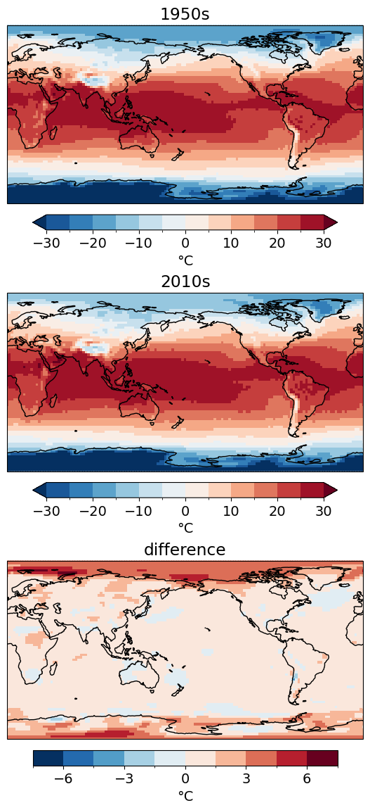
zoom in on the Northern Hemisphere high latitudes
cbar_kwargs.update(shrink=0.5)f, axes = plt.subplots(nrows=3, figsize=(8, 14), subplot_kw=dict(projection=ccrs.NorthPolarStereo(central_longitude=0)))
ncep_dec_1['air'].plot(ax=axes[0], transform=ccrs.PlateCarree(), levels=levels, cbar_kwargs=cbar_kwargs)
ncep_dec_2['air'].plot(ax=axes[1], transform=ccrs.PlateCarree(), levels=levels, cbar_kwargs=cbar_kwargs)
(ncep_dec_2 - ncep_dec_1)['air'].plot(ax=axes[2], transform=ccrs.PlateCarree(), levels=10, cbar_kwargs=cbar_kwargs)
[ax.set_title(title) for ax, title in zip(axes, ['1950s','2010s','difference'])]
[ax.coastlines() for ax in axes];
[ax.set_extent([0, 360, 30, 90], crs=ccrs.PlateCarree()) for ax in axes];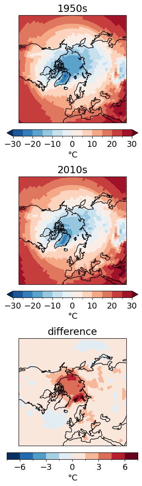
what does the time-series of surface temperature looks like for one location
Auckland_coordinates = [174.7645, -36.8509] # longitude, latitude Auckland = ncep_temp.sel(lon=Auckland_coordinates[0], lat=Auckland_coordinates[1], method='nearest')Auckland['air'].plot()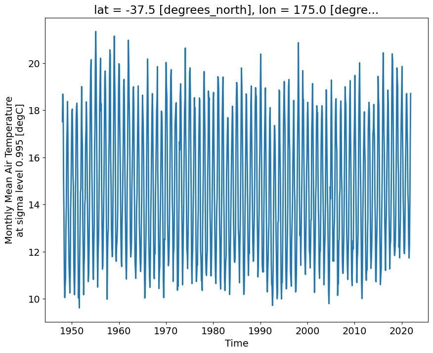
f, ax = plt.subplots()
Auckland.groupby(Auckland.time.dt.month).mean('time')['air'].plot(ax=ax, marker='o')
ax.set_xticks(np.arange(12) + 1)
ax.set_xticklabels(month_abbr[1:]);
ax.grid(ls=':')
ax.set_ylabel('\u00B0C')Text(0, 0.5, '°C')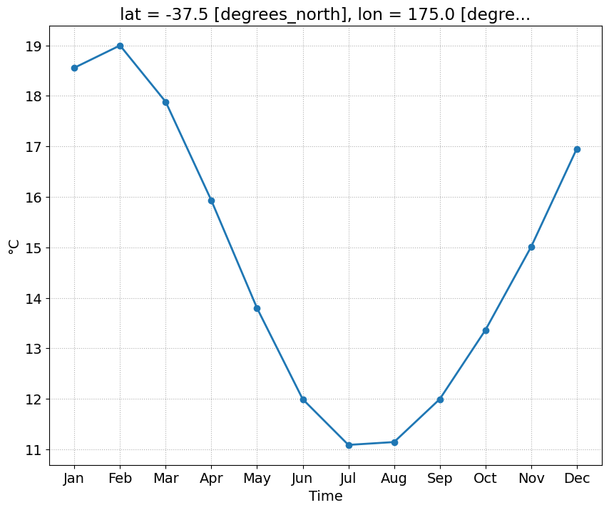
we calculate, for each grid point, the anomalies with respect to the mean seasonal cycle (average for each month)
1st step: Calculate the climatological ‘normal’ (now 1991 - 2010)
climatology = ncep_temp.sel(time=slice('1991','2010'))climatology = climatology.groupby(climatology.time.dt.month).mean('time')plots the climatologhy
cbar_kwargs = {'shrink':0.7, 'label':'\u00B0C'}fg = climatology['air'].plot(figsize=(10,8), col='month', col_wrap=3, transform=ccrs.PlateCarree(), \
subplot_kws={"projection":ccrs.PlateCarree(central_longitude=180)}, cbar_kwargs=cbar_kwargs)
for i, ax in enumerate(fg.axs.flat):
ax.coastlines()
ax.gridlines()
ax.set_title(month_abbr[i+1])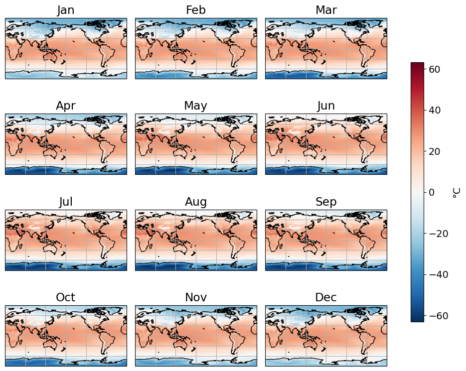
2nd step: Remove this climatology from the raw data
ncep_temp<xarray.Dataset> Size: 39MB
Dimensions: (time: 936, lat: 73, lon: 144)
Coordinates:
* time (time) datetime64[ns] 7kB 1948-01-01 1948-02-01 ... 2025-12-01
* lat (lat) float32 292B -90.0 -87.5 -85.0 -82.5 ... 82.5 85.0 87.5 90.0
* lon (lon) float32 576B 0.0 2.5 5.0 7.5 10.0 ... 350.0 352.5 355.0 357.5
Data variables:
air (time, lat, lon) float32 39MB ...
Attributes:
description: Data from NCEP initialized reanalysis (4x/day). These ar...
platform: Model
Conventions: COARDS
NCO: 20121012
history: Thu May 4 20:11:16 2000: ncrcat -d time,0,623 /Datasets/...
title: monthly mean air.sig995 from the NCEP Reanalysis
dataset_title: NCEP-NCAR Reanalysis 1
References: http://www.psl.noaa.gov/data/gridded/data.ncep.reanalysis...ncep_temp_anomalies = ncep_temp.groupby(ncep_temp.time.dt.month) - climatologyplots the anomalies for the December 2025
ncep_temp_anomalies.isel(time=-1)['air'].plot()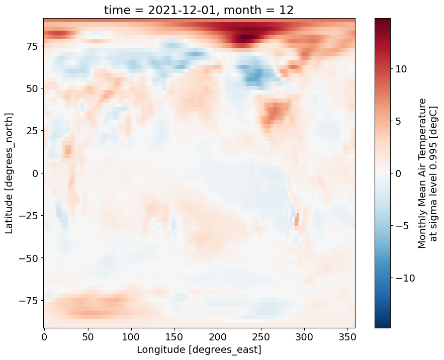
f, ax = plt.subplots(subplot_kw={"projection":ccrs.Orthographic(central_longitude=0, central_latitude=90)})
ncep_temp_anomalies.isel(time=-1)['air'].plot(ax=ax, levels=20, transform=ccrs.PlateCarree())
ax.coastlines(resolution='10m')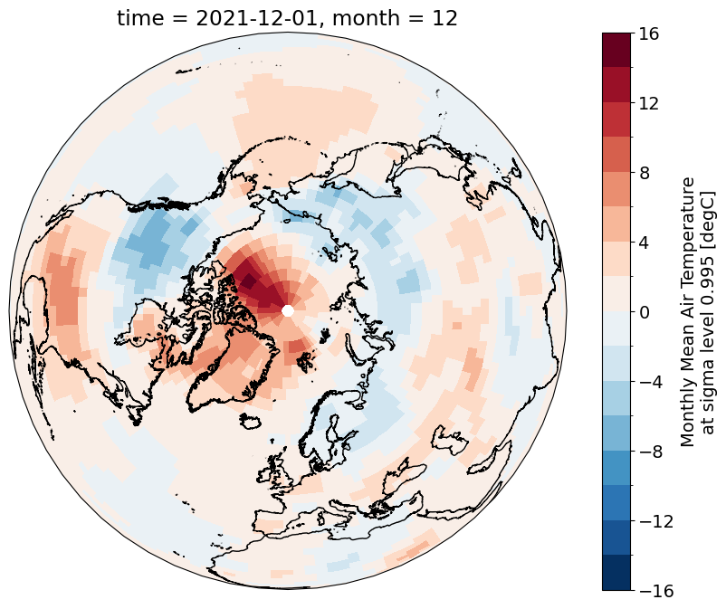
give the large difference in the area represented by grid points at low and high latitudes, we will calculate the weighted average global mean temperature anomlaies and compare the results to the standard (unweighted) anomalies
latitudes = ncep_temp['lat']latitudes<xarray.DataArray 'lat' (lat: 73)> Size: 292B
array([-90. , -87.5, -85. , -82.5, -80. , -77.5, -75. , -72.5, -70. , -67.5,
-65. , -62.5, -60. , -57.5, -55. , -52.5, -50. , -47.5, -45. , -42.5,
-40. , -37.5, -35. , -32.5, -30. , -27.5, -25. , -22.5, -20. , -17.5,
-15. , -12.5, -10. , -7.5, -5. , -2.5, 0. , 2.5, 5. , 7.5,
10. , 12.5, 15. , 17.5, 20. , 22.5, 25. , 27.5, 30. , 32.5,
35. , 37.5, 40. , 42.5, 45. , 47.5, 50. , 52.5, 55. , 57.5,
60. , 62.5, 65. , 67.5, 70. , 72.5, 75. , 77.5, 80. , 82.5,
85. , 87.5, 90. ], dtype=float32)
Coordinates:
* lat (lat) float32 292B -90.0 -87.5 -85.0 -82.5 ... 82.5 85.0 87.5 90.0
Attributes:
units: degrees_north
actual_range: [ 90. -90.]
long_name: Latitude
standard_name: latitude
axis: Yweights = np.cos(np.deg2rad(latitudes))
weights.name = "weights"
weights<xarray.DataArray 'weights' (lat: 73)> Size: 292B
array([-4.3711388e-08, 4.3619454e-02, 8.7155797e-02, 1.3052624e-01,
1.7364822e-01, 2.1643965e-01, 2.5881907e-01, 3.0070582e-01,
3.4202015e-01, 3.8268346e-01, 4.2261827e-01, 4.6174860e-01,
4.9999997e-01, 5.3729957e-01, 5.7357645e-01, 6.0876143e-01,
6.4278758e-01, 6.7559016e-01, 7.0710677e-01, 7.3727733e-01,
7.6604444e-01, 7.9335332e-01, 8.1915206e-01, 8.4339142e-01,
8.6602539e-01, 8.8701081e-01, 9.0630776e-01, 9.2387950e-01,
9.3969262e-01, 9.5371693e-01, 9.6592581e-01, 9.7629601e-01,
9.8480773e-01, 9.9144489e-01, 9.9619472e-01, 9.9904823e-01,
1.0000000e+00, 9.9904823e-01, 9.9619472e-01, 9.9144489e-01,
9.8480773e-01, 9.7629601e-01, 9.6592581e-01, 9.5371693e-01,
9.3969262e-01, 9.2387950e-01, 9.0630776e-01, 8.8701081e-01,
8.6602539e-01, 8.4339142e-01, 8.1915206e-01, 7.9335332e-01,
7.6604444e-01, 7.3727733e-01, 7.0710677e-01, 6.7559016e-01,
6.4278758e-01, 6.0876143e-01, 5.7357645e-01, 5.3729957e-01,
4.9999997e-01, 4.6174860e-01, 4.2261827e-01, 3.8268346e-01,
3.4202015e-01, 3.0070582e-01, 2.5881907e-01, 2.1643965e-01,
1.7364822e-01, 1.3052624e-01, 8.7155797e-02, 4.3619454e-02,
-4.3711388e-08], dtype=float32)
Coordinates:
* lat (lat) float32 292B -90.0 -87.5 -85.0 -82.5 ... 82.5 85.0 87.5 90.0
Attributes:
units: degrees_north
actual_range: [ 90. -90.]
long_name: Latitude
standard_name: latitude
axis: Yweights.plot()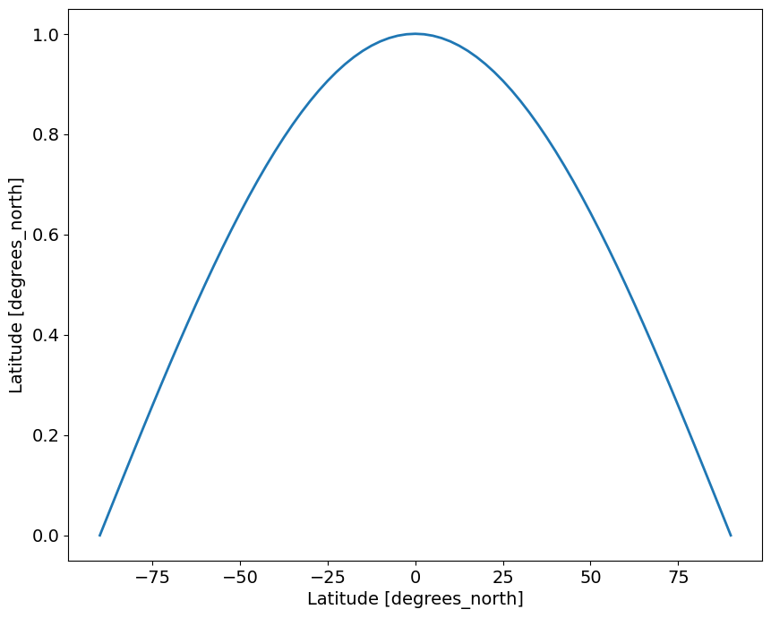
Standard mean
standard_mean = ncep_temp_anomalies['air'].mean(['lat','lon'])standard_mean_smooth = standard_mean.rolling(time=12*5, center=True).mean().dropna("time")Weighted mean
weighted_mean = ncep_temp_anomalies['air'].weighted(weights)weighted_mean = weighted_mean.mean(("lon", "lat"))weighted_mean_smooth = weighted_mean.rolling(time=12*5, center=True).mean().dropna("time")fig, ax = plt.subplots()
weighted_mean.plot(ax=ax, label='weighted mean', color='coral', lw=0.5, alpha=0.5)
standard_mean.plot(ax=ax, label='standard mean', color='steelblue', lw=0.5, alpha=0.5)
weighted_mean_smooth.plot(ax=ax, label='weighted mean (5 years rolling ave.)', color='r')
standard_mean_smooth.plot(ax=ax, label='standard mean (5 years rolling ave.)', color='b')
ax.legend(fontsize=12, frameon=False)
ax.grid(ls=':')
ax.axhline(0, color='k', zorder=0)
ax.set_title('NCEP/NCAR global temperature average')
ax.set_ylabel('\u00B0C' + ' anomaly')Text(0, 0.5, '°C anomaly')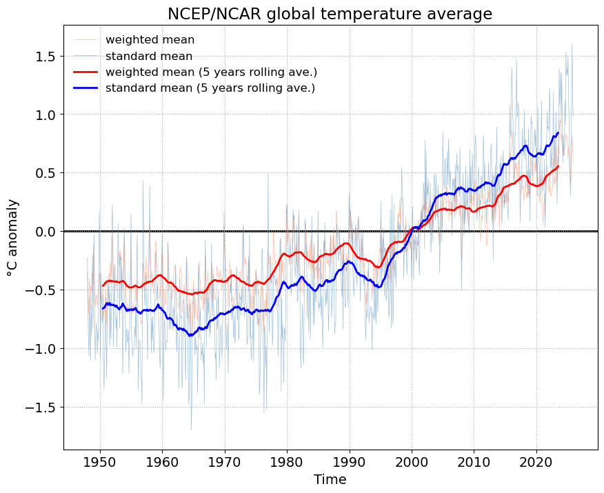
exporting the time-series in csv
weighted_mean.name = 'weighted mean'standard_mean.name = 'standard mean'global_means = xr.merge([weighted_mean, standard_mean])global_means = global_means.to_pandas()global_means.head()| month | weighted mean | standard mean | |
|---|---|---|---|
| time | |||
| 1948-01-01 | 1 | -0.344417 | -0.231683 |
| 1948-02-01 | 2 | -0.533902 | -0.662671 |
| 1948-03-01 | 3 | -0.706991 | -0.923734 |
| 1948-04-01 | 4 | -0.618840 | -1.064454 |
| 1948-05-01 | 5 | -0.407124 | -0.564210 |
global_means = global_means.drop('month', axis=1)global_means.head()| weighted mean | standard mean | |
|---|---|---|
| time | ||
| 1948-01-01 | -0.344417 | -0.231683 |
| 1948-02-01 | -0.533902 | -0.662671 |
| 1948-03-01 | -0.706991 | -0.923734 |
| 1948-04-01 | -0.618840 | -1.064454 |
| 1948-05-01 | -0.407124 | -0.564210 |
global_means.plot()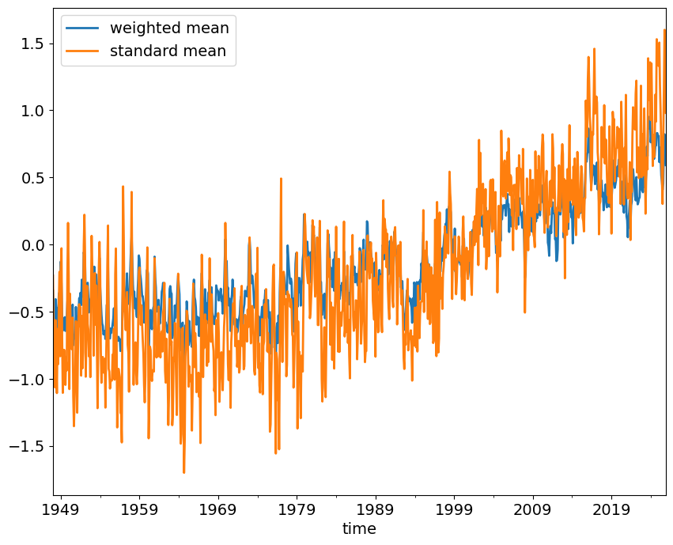
global_means_smooth = global_means.rolling(window=12*5, min_periods=12*5, center=True).mean()global_means_smooth.columns = ['weighted mean (5 years rolling ave.)', \
'standard mean (5 years rolling ave.)']global_means_smooth.plot()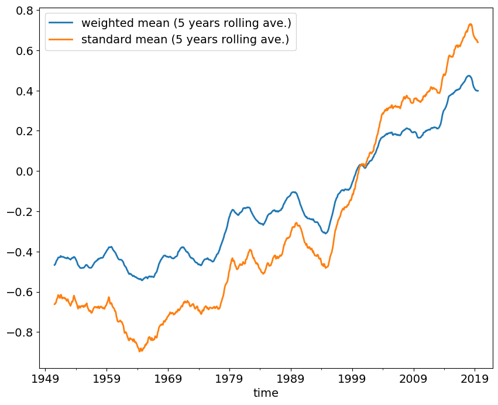
all_means = pd.concat([global_means, global_means_smooth], axis=1)all_means| weighted mean | standard mean | weighted mean (5 years rolling ave.) | standard mean (5 years rolling ave.) | |
|---|---|---|---|---|
| time | ||||
| 1948-01-01 | -0.344417 | -0.231683 | NaN | NaN |
| 1948-02-01 | -0.533902 | -0.662671 | NaN | NaN |
| 1948-03-01 | -0.706991 | -0.923734 | NaN | NaN |
| 1948-04-01 | -0.618840 | -1.064454 | NaN | NaN |
| 1948-05-01 | -0.407124 | -0.564210 | NaN | NaN |
| ... | ... | ... | ... | ... |
| 2025-08-01 | 0.455712 | 0.771791 | NaN | NaN |
| 2025-09-01 | 0.726205 | 1.156209 | NaN | NaN |
| 2025-10-01 | 0.821570 | 1.600003 | NaN | NaN |
| 2025-11-01 | 0.708482 | 1.075574 | NaN | NaN |
| 2025-12-01 | 0.591523 | 0.981019 | NaN | NaN |
936 rows × 4 columns
all_means.to_csv('./NCEP_global_means.csv')data = pd.read_csv('./NCEP_global_means.csv', index_col=0, parse_dates=True)data.head()| weighted mean | standard mean | weighted mean (5 years rolling ave.) | standard mean (5 years rolling ave.) | |
|---|---|---|---|---|
| time | ||||
| 1948-01-01 | -0.344417 | -0.231683 | NaN | NaN |
| 1948-02-01 | -0.533902 | -0.662671 | NaN | NaN |
| 1948-03-01 | -0.706991 | -0.923734 | NaN | NaN |
| 1948-04-01 | -0.618839 | -1.064454 | NaN | NaN |
| 1948-05-01 | -0.407124 | -0.564210 | NaN | NaN |
data.plot()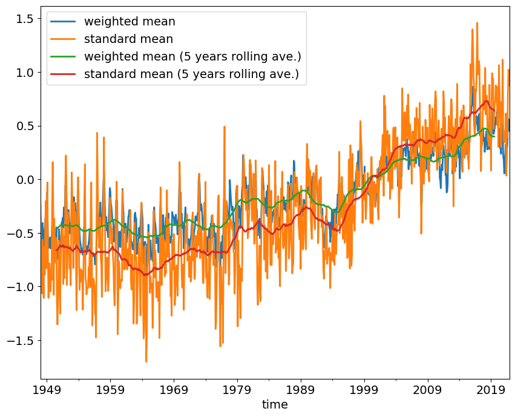